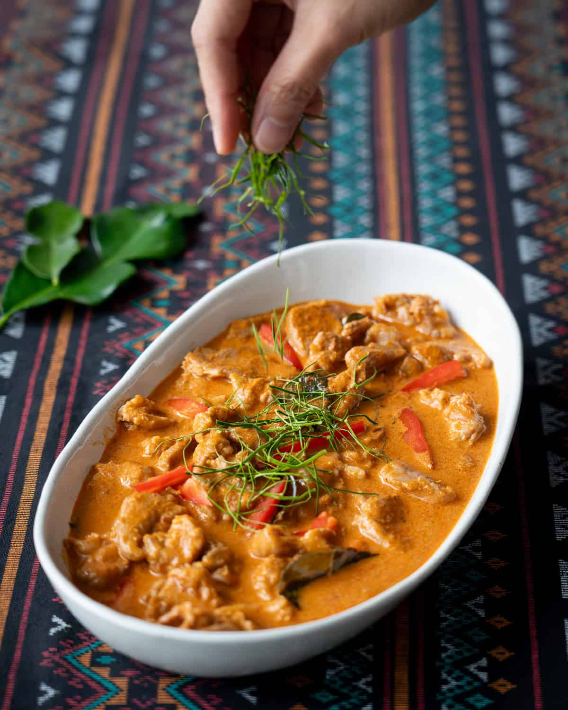

Panang Curry
Home

Description
Thai Panang Curry is a rich, mildly spicy curry made with Panang curry paste, coconut milk, and crushed peanuts. It’s thicker and creamier than most Thai curries, with a subtle sweetness and nutty flavor. Commonly cooked with beef or chicken, it’s often finished with kaffir lime leaves and served over jasmine rice.
Ingredients
- Panang curry paste
- Coconut milk
- Fish sauce
- Sugar
- Pork tenderloin
- Makrut lime leaves
- Mild red chilies
Steps
- Reduce some of the coconut milk in a wok or large skillet until very thick.
- Add the curry paste and stir to mix.
- Keep stirring until coconut oil starts to separate and sizzle around the curry paste.
- Add the palm sugar and torn makrut lime leaves and stir until the sugar is dissolved.
- Add the meat and toss to coat in the paste.
- Add the remaining coconut milk and stir until the meat is cooked through, then turn off the heat.
- Taste and adjust seasoning with more fish sauce if needed, then stir in the red pepper.
- Plate and top with julienned makrut lime leaves for garnish.